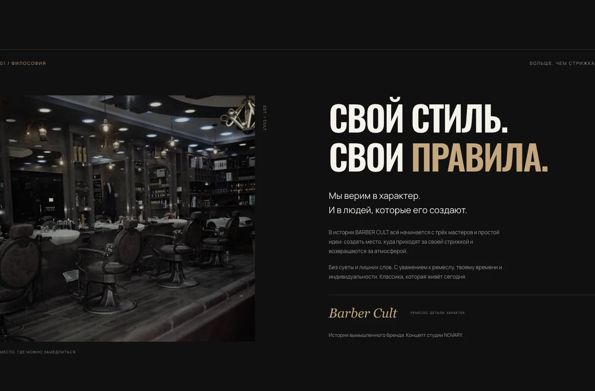
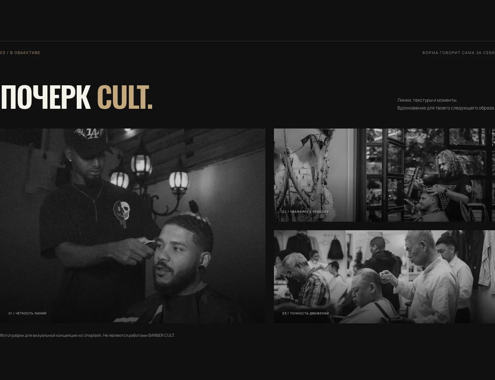
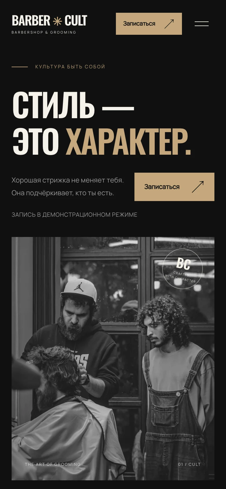

BARBER CULT
Сайт барбершопа
Демонстрационная концепция
Характер — в крупной типографике. Ремесло — в деталях. Демонстрационная концепция премиального барбершопа с тёмной, уверенной визуальной подачей.
Открыть сайт в новой вкладке
О проекте
Передать атмосферу места ещё до визита: показать подход к ремеслу, познакомить с услугами и мастерами, сделать путь к записи заметным. В концепции этот путь можно пройти в деморежиме.
Создано для портфолио NOVARY. Бренд вымышленный; проект не является клиентским заказом.
Дизайн
Контраст, ритм, характер.
Крупные узкие заголовки работают как голос бренда. Монохромные фотографии и тёплый песочный акцент поддерживают тему ремесла. Плотные текстовые блоки чередуются с пространством и крупными кадрами.
СТИЛЬ — ЭТО ХАРАКТЕР.
Точность в деталях. Свобода в стиле.
Палитра проекта
- Фон#101010
- Текст#F5F2EB
- Акцент#C4A77D
Услуги собраны в читаемый прайс, работы — в фотогалерею. Кнопки записи доступны в нескольких контекстах: выбранная услуга или мастер передаются в демонстрационное окно.
Реализация
HTML, CSS и Vanilla JavaScript. Без фреймворков и серверной части.
Адаптивная вёрстка, локальные шрифты и изображения WebP. Анимация появления учитывает настройку reduced motion.
- Навигация
- Адаптивное меню, переходы по секциям и возврат фокуса после закрытия диалога.
- Демонстрация записи
- Нативный dialog показывает выбранную услугу или мастера. Настоящая запись не выполняется, данные не собираются.
- Смена отзывов
- Кнопки переключают три демонстрационных текста. Это примеры интерфейса, а не отзывы реальных клиентов.
Внутри интерфейса
На сайте можно изучить услуги и работы, переключить примеры отзывов и открыть демо записи. Реальных услуг, адреса и бронирования нет.
Посмотреть демосайт в новой вкладке


Обсудим
вашу задачу.
Расскажите, что хотите создать и для кого. Уточним детали, предложим формат и определим следующий шаг.
Готовое техническое задание не требуется.
Написать в TelegramTelegram-канал пока недоступен. Пожалуйста, зайдите позже.